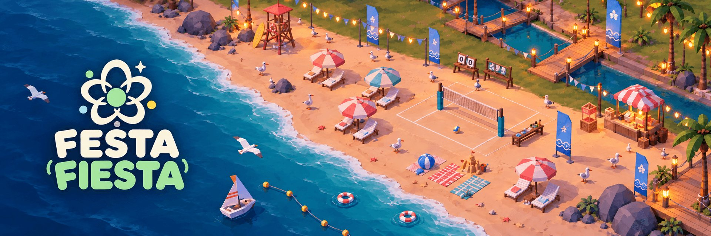
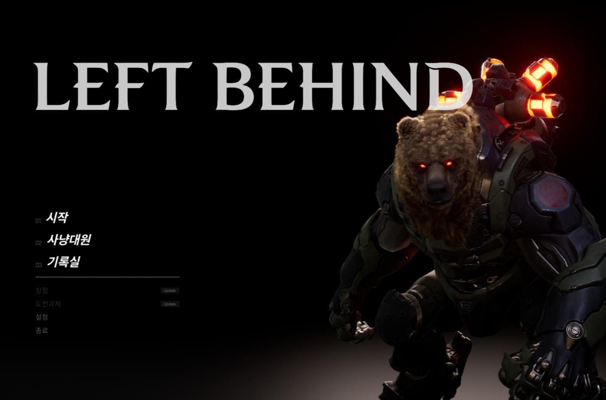
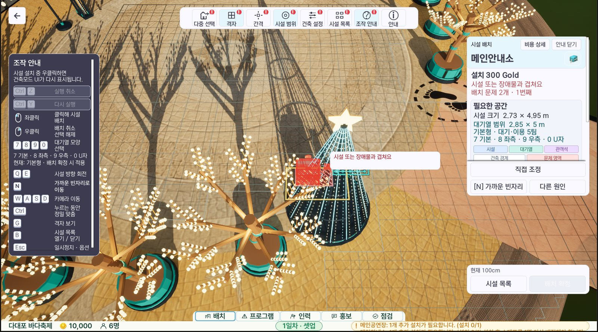
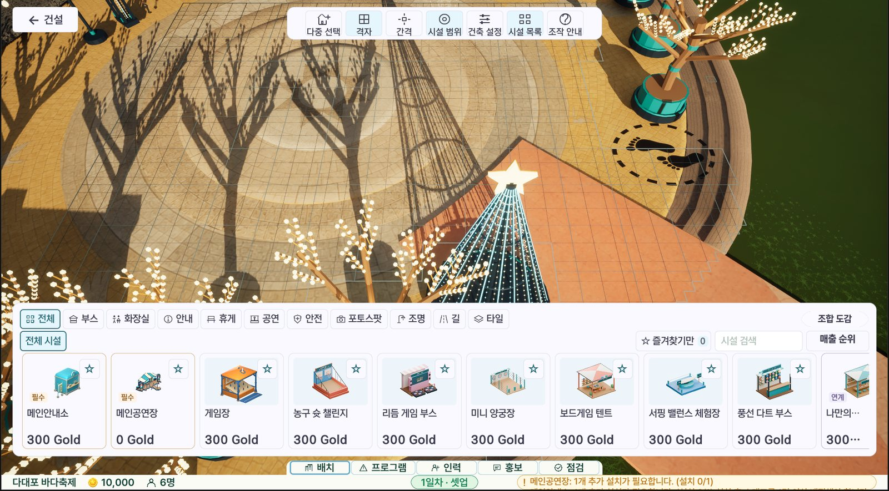
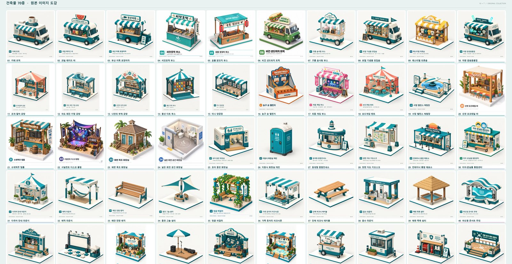
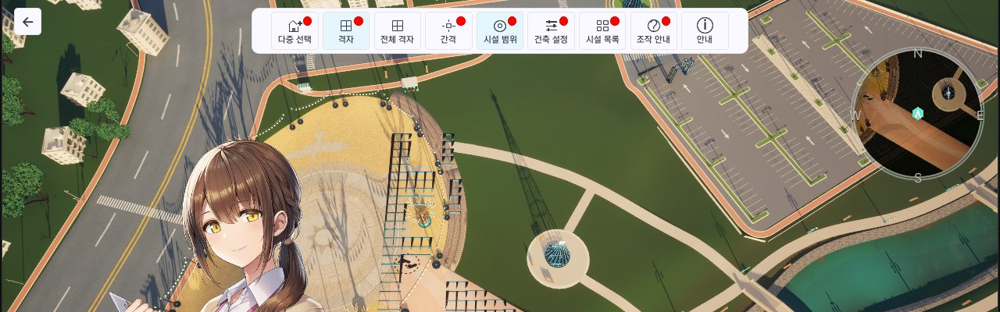
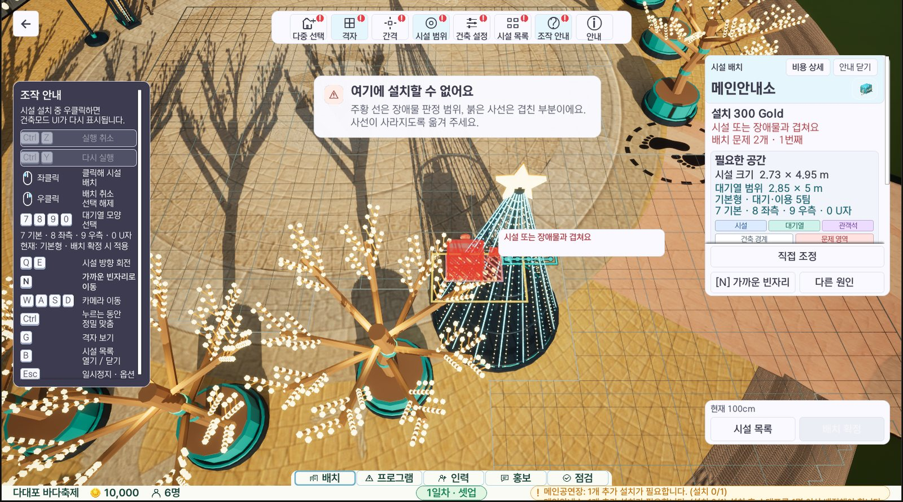
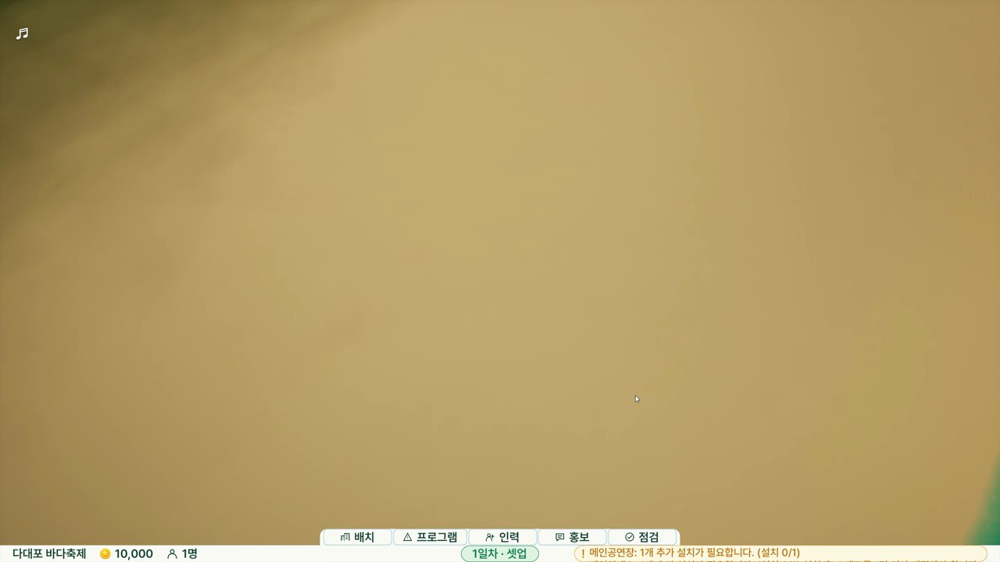
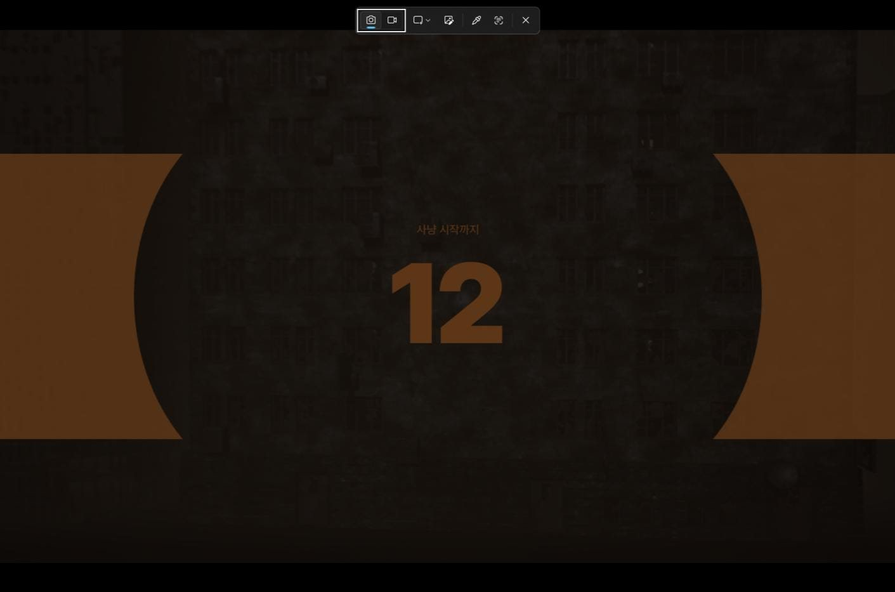
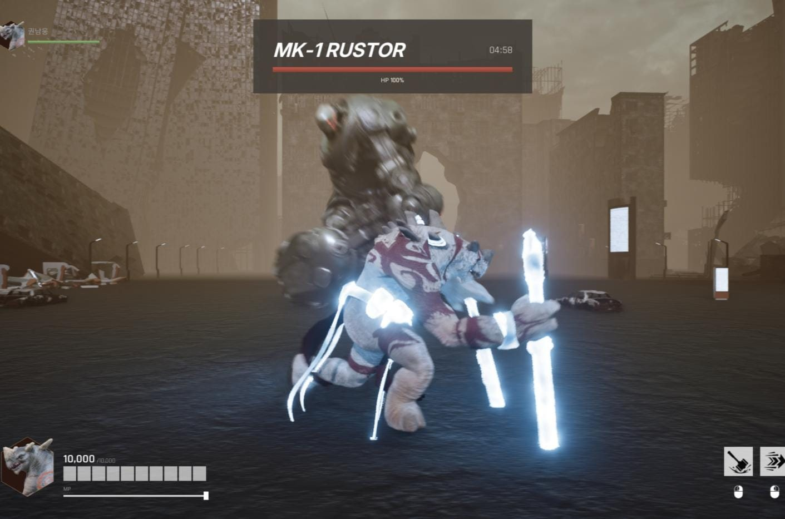

GAME CLIENT PROGRAMMER · UNREAL C++
PORTFOLIO
ABOUT ME
복잡한 시스템을 모듈로 나누고,
테스트로 증명합니다
Festa Fiesta!에서는 시설 배치 엔진을 플러그인으로 설계해 임의 각도 회전, 묶음 편집·실행 취소, NavMesh 접근점 보정, Shipping 패키징 안정화를 맡았습니다. LEFT BEHIND에서는 EOS 세션과 서버 권한 판정으로 멀티플레이 진입과 전투 흐름을 안정화했습니다.
SKILLS
PROFICIENCY
게임 수학으로 배치 판정을 설계합니다
AABB 1차 필터와 OBB·SAT 정밀 판정을 나눠 임의 각도 회전 배치의 겹침 오탐을 없앴습니다. 회전값은 정수(0.01도)로 저장해 판정을 결정적으로 유지했습니다.
Festa Fiesta! · 45도 회전 회귀 테스트 기준 오탐 0건상태 변경은 전부 성공하거나 전부 되돌립니다
묶음 편집은 새 상태를 먼저 준비한 뒤 확정하고, 실패하면 시설과 비용 정책을 역순으로 복구합니다. 멀티플레이 판정은 서버 권한·서버 시각으로 일원화했습니다.
건축 편집 테스트 174개 통과 · LEFT BEHIND 서버 타이머실제 빌드에서 돌아가는지까지 확인합니다
Cook 후에만 생기는 좌표 변형과 NavMesh 왜곡을 원인부터 추적하고, 빌드 무결성 검사와 자동화 테스트로 배포본을 검증했습니다.
Cook 전후 Zone 13개 좌표 오차 0 · 배포 파일 100개 해시 일치CONTENTS
Festa Fiesta!
축제 건설·경영 시뮬레이션 · 7인 · 2026.08 ~ 2026.10 · UE 5.7.4 / C++
- 건축 플러그인 아키텍처
- OBB·SAT 임의 각도 회전 배치
- 지면 판정 오탐 수정
- 묶음 편집·실행 취소
- 군중 AI 접근점 자동 보정
- Win64 Shipping 패키징 안정화
- 시설 조합 미리보기

LEFT BEHIND
EOS 협동 보스 레이드 액션 RPG · 5인 · 2026.06 ~ 2026.07 · UE 5.7.4 / C++ / GAS
- 레이드 시작 준비 Barrier
- 서버 타이머 연사 판정
- 역할 편향 없는 MVP 산식
- 오버킬·오버힐 제외 집계
- EOS 세션·초대·방 관리

Festa Fiesta!
부산 다대포 해변에 축제장을 짓고 운영하는 싱글 플레이 건설·경영 시뮬레이션입니다. 시설의 위치와 운영 방식에 따라 방문객의 움직임이 달라집니다. 저는 시설이 놓이는 모든 순간 — 배치 판정, 회전, 편집, 실행 취소 — 과 그 결과가 군중 AI 경로와 패키징 빌드까지 올바르게 이어지도록 만드는 일을 맡았습니다.
FESTA FIESTA! · OVERVIEW
건축 모드 — 제가 만든 시스템이 보이는 화면
시연 영상



FESTA FIESTA! · ARCHITECTURE
확장 가능한 건축 플러그인 구조
플러그인 추가 커밋최종 판정은 한 곳에서
건축 화면·제작 도구·미리보기 모두 UFFZSWorldSubsystem의 공통 명령 경로로 설치 가능 여부를 판단합니다.
추가 규칙은 인터페이스로
비용·강화·구획 잠금이 IFFZSExternalPolicy의 사전검사 → 임시적용 → 확정/복구 약속에 참여해, 코어가 개별 게임 규칙을 몰라도 됩니다.
기존 코드를 고치지 않고 확장
구역 제작 기능은 새 플러그인(FF_ZoneAuthoring)으로 얹고, 두 플러그인 모두 Runtime·Editor 모듈을 분리했습니다.
// ApplyTentativeFFZoneSystemChange_Implementation // 사전 검증과 실제 적용 사이에 구획이 잠길 수 있으므로 같은 판정을 한 번 더 한다. const UFFZAZoneAuthoringSubsystem* Subsystem = Owner.Get(); return Subsystem ? Subsystem->EvaluatePlacement(Context) : FFFZSPolicyDecision();
FESTA FIESTA! · TROUBLESHOOTING 01
90도 회전의 한계를 OBB·SAT 판정으로 풀었습니다
코드 변경 보기01 문제
시설을 90도 단위로만 돌릴 수 있어 해변 곡선을 따라 비스듬히 놓을 수 없었습니다. 배치 영역을 축정렬 사각형(AABB)으로만 판정해, 45도로 돌린 시설끼리는 실제로 떨어져 있어도 겹친다고 오판했습니다.
02 해결
OBB 기하 연산을 별도 모듈로 분리하고 AABB로 후보를 거른 뒤 SAT로 정밀 판정했습니다. 회전값은 정수 1/100도로 저장하고 90도 각도는 격자에 맞게 스냅했습니다. NavMesh는 DynamicModifiersOnly와 NavArea_Null modifier만 갱신해 회전 배치의 비용 범위를 제한했습니다.
03 결과
임의 각도(0.01도 단위) 배치를 지원하고, 기존·신규 판정 등가성 회귀 테스트와 45도 오탐 테스트에서 오탐 0건을 확인했습니다.
double NormalizeYawDegrees(const double YawDegrees) { double Result = FMath::Fmod(YawDegrees, 360.0); if (Result < -180.0) { Result += 360.0; } else if (Result >= 180.0) { Result -= 360.0; } return Result; }
FESTA FIESTA! · TROUBLESHOOTING 02
빈 땅인데 설치가 막히던 원인을 찾아 고쳤습니다
코드 변경 보기01 문제
메인 공연장 후보 위치에서 빈 잔디가 장애물로 판정돼 설치가 거절됐습니다. 일반 시설은 지면 검사 결과를 충돌 검사에 넘기지 않아, 평균 바닥보다 조금 높은 땅을 장애물로 오인했습니다.
02 해결
검증된 지면 정보(FFFZSPlacementGroundSupport)를 충돌 검사에 전달하고, 건물에서 떨어진 대기열·관객석은 지면을 따로 검사했습니다. 실패하면 지면 문제와 실제 장애물을 구분해 이유·위치·가까운 빈자리를 안내합니다.
03 결과
같은 후보 위치에서 설치 확정이 활성화됐고, 실제 나무와 겹칠 때의 차단은 유지됐습니다. 관련 자동 검사 61개가 경고·실패 없이 통과했습니다.

if (Failure != EFFZSPlacementFailure::PlacementCollision) { // Audience and queue regions have their own terrain. A footprint's proof // must not exempt a distant slope, missing ground, or unrelated surface. FFFZSPlacementValidation SurfaceValidation; SurfaceValidation.PlacementTransform = InOutValidation.PlacementTransform; SurfaceValidation.FootprintOrientedRects.Add(LocalRegion); ValidateGround(Zone, Spec, IgnoreFacility, SurfaceValidation, &ReservationSupport); // … 이하 3줄 생략 }
FESTA FIESTA! · TROUBLESHOOTING 03
묶음 편집과 실행 취소를 비용까지 함께 되돌렸습니다
01 문제
먹거리 거리처럼 여러 시설로 만든 구성을 하나씩 다시 옮겨야 했습니다. 묶음 중 일부만 적용되거나, 시설만 되돌리고 비용은 그대로 남는 불일치 위험이 있었습니다.
02 해결
상대 위치를 유지한 이동·회전·복사 명령을 만들고, 새 상태를 모두 준비한 뒤 한 번에 확정했습니다. 하나라도 등록에 실패하면 임시 시설을 해제하고 원본과 비용 정책을 역순으로 복구합니다.
03 결과
실행 취소·다시 실행과 배치 설계도 저장·재사용을 구현했고, 부분 실패·반복 실행 취소·비용 보존 시나리오를 다룬 자동화 테스트 174개가 통과했습니다(실패 0).
bool bRegistered = true; for (auto& Pair : Staged) if (!RegisterFacility(Pair.Value)) { bRegistered = false; break; } if (!bRegistered) { for (auto& Pair : Staged) UnregisterFacility(Pair.Value); for (auto& Pair : Originals) ensure(RegisterFacility(Pair.Value)); for (int32 Index = Contexts.Num() - 1; Index >= 0; --Index) RollbackPolicies(Contexts[Index], Policies[Index]); DestroyStaged(); return MakeFailure(EFFZSPlacementFailure::InternalError, LOCTEXT("BatchRegister", "그룹 등록에 실패하여 원래 배치를 복구했습니다.")); }
FESTA FIESTA! · TROUBLESHOOTING 04
지형을 고치지 않고 군중 AI의 길을 되찾았습니다
01 문제
Test_Main 지형은 45~582cm 단차 슬래브가 이어진 구조라 NavMesh가 단차마다 끊겼습니다. 구역 모서리 한 점을 대표 접근점으로 써서, 걸어갈 수 있는 구역도 도달 불가로 판정됐습니다.
02 해결
게임·PIE 월드에서만 생성되는 WorldSubsystem을 만들어 에디터 레벨을 건드리지 않았습니다. 접근점이 없는 구역만 골라 경계 내부를 반감 격자로 샘플링하고, ProjectPointToNavigation·GetPathLength로 실제 경로가 있는 점을 주입했습니다.
03 결과
첫 AI 결정 전(OnWorldBeginPlay)에 보정을 끝내고, 보정할 수 없는 구역은 좌표와 함께 보고합니다.
FESTA FIESTA! · TROUBLESHOOTING 05
에디터에선 정상, 패키지에선 틀어지던 원인을 찾았습니다
01 문제
Win64 Shipping Cook 후 Zone 좌표가 에디터와 달라지고, 카메라 시작 높이와 군중 입구 지면 처리에 오류가 생겼습니다.
02 해결
런타임 Zone 13개가 에디터 전용 부모에 붙어 있어, Cook에서 부모가 제거되며 상대 위치만 남는 것을 확인했습니다. 월드 위치·회전·크기를 유지한 채 분리하고 부모 체인 검사를 추가했으며, 주차장 메시는 삼각형 기반 충돌로 바꿔 NavMesh를 재생성했습니다.
03 결과
빌드 전용 DDC와 배포 ZIP SHA-256 검사를 자동화했습니다. Cook 전후 Zone 좌표 오차 0, 프로젝트 자동화 테스트 1,148개 통과, 배포 파일 100개 해시가 모두 일치했습니다.

수정 전
Cook 후 (-7,410, -4,380) cm
원본 위치에서 이탈
수정 후
Cook 후 (76,510, 30,270) cm
원본과 동일
대표 사례 GZ_Tutorial · Cook 전후 Zone 데이터 비교
FESTA FIESTA! · TROUBLESHOOTING 06
미리보기와 실제 효과가 같은 기준을 쓰게 했습니다
코드 변경 보기01 문제
주변 시설 조합에 따라 수익 보너스가 붙는데, 배치 전 미리보기와 실제 적용이 다른 규칙으로 계산되면 효과가 과장될 수 있었습니다. 복제·이동 중인 시설이 이전 위치와 함께 집계되는 문제도 있었습니다.
02 해결
UObject가 아닌 평가기(FFF_FacilitySynergyEvaluator) 하나를 실제 효과와 미리보기가 함께 쓰게 했습니다. 이동 대상의 기존 번호는 평가에서 빼고, 효과가 큰 규칙부터 적용하되 같은 그룹은 건너뛰고 전체 상한 안에서만 더합니다.
03 결과
월드를 바꾸지 않고 후보 위치의 효과 전후를 계산합니다. 동률은 규칙 이름 순으로 정해 계산 순서에 따른 표시 차이를 없앴습니다.
// … 정렬 람다 생략: 보너스가 큰 규칙 먼저, 같으면 규칙 이름 순 TSet<FName> AppliedGroups; for (const int32 MatchIndex : Active) { FFF_FacilitySynergyMatch& Match = Result.Matches[MatchIndex]; const FFF_FacilitySynergyRow& Row = Rules[Match.RuleIndex].Row; if (!Row.StackingGroup.IsNone() && AppliedGroups.Contains(Row.StackingGroup)) continue; if (!Row.StackingGroup.IsNone()) AppliedGroups.Add(Row.StackingGroup); Match.AppliedPercent = FMath::Min(Row.RevenueBonusPercent, FMath::Max(0.f, MaxPercent - Result.TotalPercent)); Result.TotalPercent += Match.AppliedPercent; }
FESTA FIESTA! · TROUBLESHOOTING 07–09
그 밖의 개선
통합 건설 영역과 기존 구역 데이터의 책임 분리
- 문제
- 맞닿은 구역 경계 때문에 시설을 연속 배치하지 못했습니다. 31개 구역 데이터는 NPC 판단과 혼잡·이동 거리 계산에도 쓰이고 있었습니다.
- 해결
- BuildArea_Main으로 건설 영역만 통합하고 FFZSGameplayZone 31개는 보존했습니다. exact union/subtract로 경계와 실제 구멍을 구분했습니다.
- 결과
- 맞닿은 구역을 가로질러 배치할 수 있고, 재로딩·에디터 빌드·자동화 테스트 15개로 확인했습니다.
시설 선택과 캐릭터 이동 Collision channel 분리
- 문제
- 플레이어 캐릭터가 설치한 시설을 통과했습니다. 선택용 프록시가 QueryOnly trace 전용이라 이동을 막지 못했습니다.
- 해결
- FacilitySelection은 선택 전용으로 유지하고, FacilityPlayerCollision을 추가해 캐릭터 capsule만 Block하도록 분리했습니다.
- 결과
- 캐릭터가 시설을 통과하지 않고, 선택 처리는 별도 channel에서 그대로 동작합니다.
시설 수익 Data Table 일원화와 fingerprint 호환
- 문제
- 115종 시설의 수익 규칙이 흩어져 있었고, override 필드를 항상 명령 fingerprint에 넣으면 기존 명령의 바이트 호환이 깨졌습니다.
- 해결
- DT_FacilityRevenues로 수익 규칙을 일원화하고, override가 켜졌거나 금액이 0이 아닐 때만 필드를 직렬화했습니다.
- 결과
- 기획자가 표 한 행으로 같은 종류의 수익을 조정하고, 기본 정책 명령은 기존 fingerprint를 유지합니다.
FESTA FIESTA! · LEARNINGS
배운 점
기존 시스템이 쓰는 데이터의 책임은 보존한 채, 새 기능의 처리 범위만 분리해야 합니다.
사용자 조작 기능은 좌표 계산뿐 아니라 NavMesh 갱신처럼 연쇄되는 런타임 비용까지 함께 설계해야 합니다.
여러 객체를 바꾸는 편집은 '전부 성공 또는 전부 복구' 규칙을 먼저 정해야 데이터가 어긋나지 않습니다.
에디터에서 맞는 것과 패키지에서 맞는 것은 다릅니다. Cook 결과를 직접 비교하는 검증 경로가 필요합니다.
최적화는 측정부터 — 다음 프로젝트에서는 Unreal Insights로 시설 수에 따른 Game Thread 시간을 전후 비교해, 성능 개선을 숫자로 남기겠습니다.
LEFT BEHIND
Unreal Engine 5.7로 제작한 5인 멀티플레이 보스 레이드 RPG입니다. 플레이어는 EOS 세션에서 파티를 구성하고 캐릭터를 선택한 뒤, 컷씬과 카운트다운을 거쳐 보스 MK-1 RUSTOR를 공략합니다. Seamless Travel 이후의 초기화 순서, 서버 권한 공격 판정, 레이드 결과 집계처럼 멀티플레이 진입과 전투 흐름의 안정성에 집중했습니다.
LEFT BEHIND · ARCHITECTURE
서비스 구조
레이드 진입부터 결과 화면까지, 네 개의 핵심 클래스를 주로 구현했습니다.
ULB_GameInstance
EOS 세션 생성·검색·초대를 맡는 서브시스템과 공용 데이터 타입
ALB_RaidGameMode
준비 완료 Barrier로 모든 클라이언트가 모인 뒤 레이드 시작
ALB_PlayerController
서버 권한 기본공격 입력과 Seamless Travel 뒤 HUD 초기화
ULB_BattleHUDWidget
캐릭터 선택·전투 HUD·MVP 스코어보드 표시
LEFT BEHIND · TROUBLESHOOTING 01–02

레이드 시작을 준비 완료 Barrier로 동기화
코드 변경 보기새 Controller·PlayerState가 준비되기 전 컷씬이 자동 재생돼, 클라이언트가 입장한 뒤 전투가 시작되지 않았습니다.
준비 RPC를 받은 인원을 ExpectedRaidPlayers와 비교해 모두 모이면 컷씬·카운트다운을 시작하고, 타임아웃도 뒀습니다.
모든 클라이언트가 준비된 뒤 레이드가 시작되는 것을 진입 흐름으로 확인했습니다.
const int32 RequiredPlayers = ExpectedRaidPlayerCount > 0 ? ExpectedRaidPlayerCount : FMath::Max(1, GetNumPlayers()); if (RaidReadyControllers.Num() < RequiredPlayers) { return; } bRaidStartTriggered = true;

기본공격 연사 판정을 서버 타이머로 일원화
코드 변경 보기Triggered 이벤트마다 클라이언트가 간격을 재고 RPC를 보내, 입력 프레임과 네트워크 지연에 따라 연사 간격이 달라졌습니다.
눌림·뗌 상태만 ServerSetPrimaryHeld로 보내고, 서버 타이머가 최소 간격을 검사해 공격을 활성화합니다.
연사 판정이 서버 시각 기준으로 통일됐고, RPC는 상태가 바뀔 때만 전송됩니다.
// 서버가 실제 공격 시도 시각을 보관해 hold 타이머와 // 단발 RPC가 동일한 rate gate를 공유한다. double LastPrimaryActivationServerTime = -1.0; bool bLocalPrimaryHeld = false; bool bServerPrimaryHeld = false; FTimerHandle ServerPrimaryRepeatTimerHandle;
LEFT BEHIND · TROUBLESHOOTING 03–04
역할 편향 없는 레이드 MVP 선정 산식
누적 피해량만으로 MVP를 뽑아, 피해와 회복의 단위·규모 차이 때문에 힐러가 구조적으로 선정될 수 없었습니다.
산식을 PlayerState와 분리된 순수 함수 네임스페이스(LBRaidMVP)로 만들어 단위 테스트가 가능하게 하고, 역할별 정규화와 가중합을 적용했습니다.
자동화 테스트 5종으로 역할 공정성, 결과 결정성, 비정상 입력 방어를 검증했습니다.
딜러 A 피해 9,000 · 힐러 B 회복 3,000이 각자 역할의 최댓값이면 둘 다 1.0으로 정규화돼, 단위가 달라도 같은 기준에서 비교됩니다.
오버킬·오버힐을 걸러낸 스코어보드 집계
GAS가 HP 적용 전 수치를 그대로 통계에 반영해, 보스 오버킬과 파티원 오버힐이 실제 HP 변화보다 크게 집계됐습니다.
PreGameplayEffectExecute에서 적용 전 수치를 제한해 실제 변화량을 구하고, 서버 권한·전투 중·0이 아닌 변화만 집계해 클라이언트 중복과 자기 회복을 제외했습니다.
피해·회복 통계와 이벤트 브로드캐스트를 실제 HP 변화량 기준으로 통일해 과대 집계를 없앴습니다.
EffectiveDelta→서버 권한 · 전투 중
0이 아닌 변화만→보스 피격 = 피해
타 파티원 회복 = 회복
남은 HP가 200인 보스에게 500 피해를 주면, 기존에는 500이 집계됐고 변경 후에는 실제 HP 변화량인 200만 집계됩니다.
LEFT BEHIND · TROUBLESHOOTING 05–07
멀티플레이 진입 흐름 안정화
Seamless Travel 뒤 레이드 HUD 초기화 재시도
- 문제
- 원격 클라이언트가 레이드에 들어간 뒤 HUD를 보지 못할 수 있었습니다. Controller BeginPlay가 로컬 플레이어 연결보다 먼저 실행됐습니다.
- 해결
- ReceivedPlayer·BeginPlayingState·OnRep_PlayerState에서 중복 생성에 안전한 초기화를 재호출하고, GetLocalPlayer 검사를 추가했습니다.
- 결과
- Pawn과 GameState 복제가 늦어도 준비가 끝나면 HUD가 붙습니다.
EOS 친구 초대의 누락된 소유자 정보 보정
- 문제
- 친구 초대를 수락해도 방 참가로 넘어가지 못했습니다. UE 5.7 초대 payload의 OwningUserId가 비면 유효한 세션까지 거부했습니다.
- 해결
- 세션 정보가 유효하면 초대를 수락하고, 소유자가 비면 같은 세션 ID의 캐시 검색 결과에서 정보를 복원했습니다.
- 결과
- 소유자 정보가 없는 초대도 참가 절차로 넘어가고, 다른 로비 소유자를 복사하지 않는 자동화 테스트를 통과했습니다.
방 이름 검증과 방 생성 취소 상태 분리
- 문제
- 방장 닉네임으로만 방을 구분해 같은 닉네임 방을 구별할 수 없었고, 방 생성 취소가 입력 상태와 묶여 뒤로가기 시 메뉴가 복구되지 않았습니다.
- 해결
- 방 이름 정규화(공백 제거·한글/영문/숫자 2~24자)와 생성 전 같은 이름 조회를 추가하고, bRoomCreationActive·CancelRoomCreation으로 취소 상태를 분리했습니다.
- 결과
- 같은 이름의 방 생성을 사전 조회로 막고, 방 생성 → 목록 → 루트 메뉴까지 뒤로가기가 이어집니다.
LEFT BEHIND · LEARNINGS
배운 점
Seamless Travel 뒤에는 객체 준비 순서를 가정하지 말고, 서버의 준비 조건과 클라이언트 재진입 경로를 함께 설계해야 합니다.
연속 입력의 전투 판정은 클라이언트 프레임이 아니라 서버 시각과 타이머를 기준으로 일원화해야 합니다.
외부 온라인 서비스의 일시적 실패는 적용 범위와 최대 횟수가 제한된 지수 백오프로 복구해야 합니다.
멀티플레이 UI는 단발 Snapshot이 아니라 GameState 변경 이벤트와 델리게이트로 갱신해야 합니다.
방 이름 중복 검사는 '조회 후 생성' 사이에 동시 생성 가능성이 남습니다. 다음에는 서버 측 고유 키 예약으로 원자적으로 보장하겠습니다.
THANK YOU
감사합니다
시설이 놓이는 순간부터 패키징 빌드까지, 그리고 레이드 입장부터 결과 화면까지 —
보이지 않는 경계에서 시스템이 어긋나지 않도록 만드는 프로그래머가 되겠습니다.
한광훈 · kpo9101@gmail.com